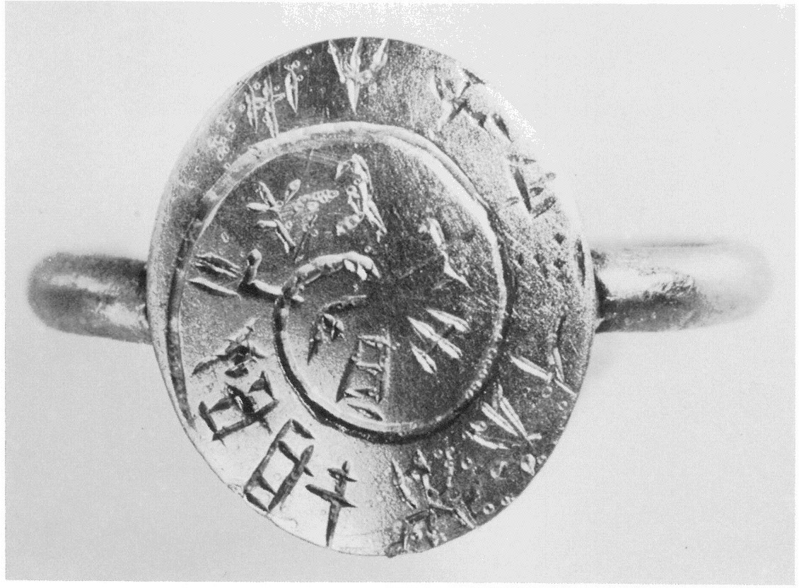
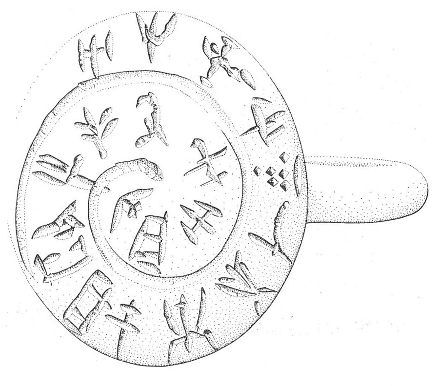

-
KNZf13
Names
Aliases for the inscription.
KNZf13, KN Zf 13
Support
Type of Object.
Metal object
Location
Site where object was found.
Knossos
Findspot
Location at Site.
Unavailable


# "Row Index", "Line Index", "Word Index", "Syllabogram", "Status of Reading"
# R L W I S
# 1 0 1 PA certain
1 1 0 A certain
1 1 0 RE certain
1 1 0 NE certain
1 1 0 SI certain
1 1 0 DI certain
2 1 0 *301 certain
3 1 0 PI certain
4 1 0 KE certain
5 1 0 PA certain
6 1 0 JA certain
7 1 0 TA certain
8 1 0 RI doubtful
8 1 0 SE certain
8 1 0 TE certain
8 1 0 RI doubtful
8 1 0 MU doubtful
9 1 0 A certain
10 1 0 JA certain
11 1 0 KU doubtful
Scribe
Writer of Inscription.
Unavailable
Context
Approximate Date of Inscription.
Late Minoan IA
1600-1500 BCE
Dimensions
Height x Length x Thickness.
Catalogue
Museum Reference Number.
Readings
Linear A Transcription
A Linear A transcription with words parsed separately.
Line breaks match the inscription.
𐘇𐘙𐘗𐘤𐘆
𐙕
𐘢
𐘥
𐘂
𐘱
𐘳
𐘭𐘈𐘃𐘭𐘕
𐘇
𐘱
𐙂
ASCII Transcription
An ASCII transcription with words parsed separately.
Line breaks match the inscription.
ARENESIDI
*301
PI
KE
PA
JA
TA
RISETERIMU
A
JA
KU
Linear A Tabulation
A Linear A transcription with words parsed separately.
Line breaks are logical, e.g. to represent a list.
𐘇𐘙𐘗𐘤𐘆𐙕𐘢𐘥𐘂𐘱𐘳𐘭𐘈𐘃𐘭𐘕𐘇𐘱𐙂
ASCII Tabulation
An ASCII transcription with words parsed separately.
Line breaks are logical, e.g. to represent a list.
ARENESIDI*301PIKEPAJATARISETERIMUAJAKU
Commentaries
KN Zf 13
(HM 530) (
CMS
II 3.38;
GORILA IV: 152-153, 162), gold ring (Mavrospelio tb IX.E1, MM III-LM IA
context), read from the circumference to the center
A-RE-NE-SI-DI-*301-PI-KE-PA-JA-TA-
RI
-SE-TE-
RI
-
MU
-A-JA-
KU
cf. A-RA-NA-RE (HT 1.4), A-RI-NI-TA (HT
25a.3; ZA 8.2-3)
Commentary © John Younger
References
papers/GORILA-Vol4.pdf#page=194